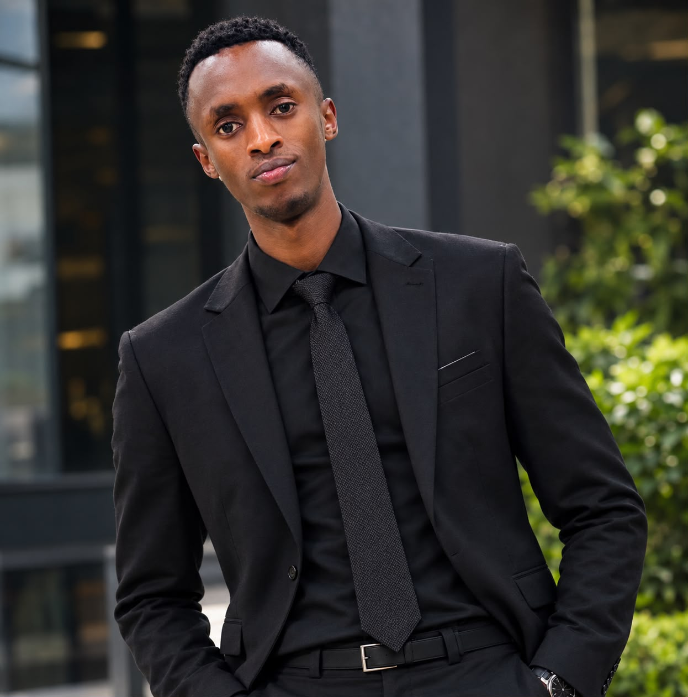
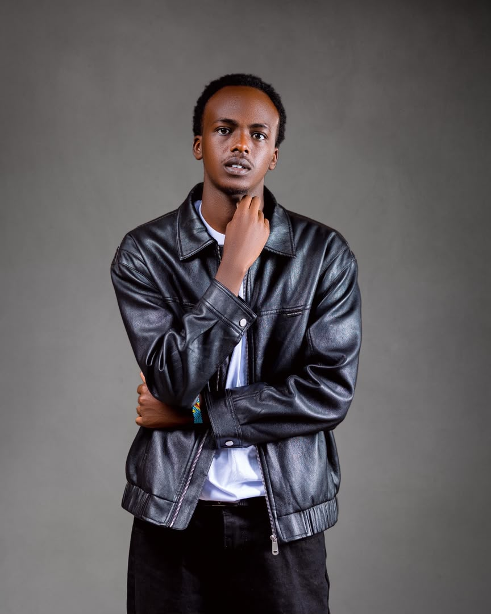
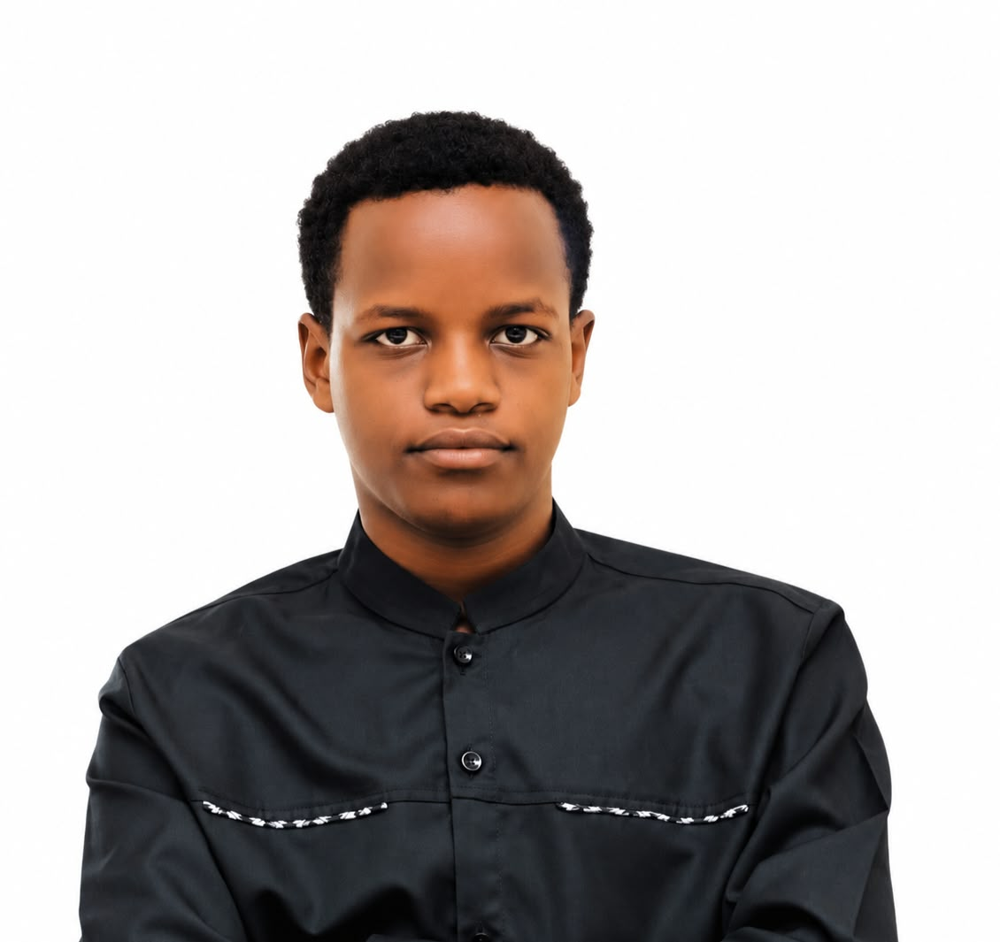

Dignity first
We believe every child should be treated with respect, kindness and care.
Future Light Foundation works to support vulnerable children and young people through care, education and community connection.
The foundation grew from a personal promise: that children who have faced loss, homelessness or uncertainty should not have to navigate hardship alone.
That belief continues to guide our work in Kigali, Rwanda. We aim to connect children with the practical support, trusted relationships and learning opportunities they need to imagine a different future.
Every child deserves dignity, care and a real opportunity to grow.

Our values shape how we work with children, families, volunteers and supporters.
We believe every child should be treated with respect, kindness and care.
Lasting support is built with communities, listening carefully to the needs around us.
We aim to communicate clearly, use support responsibly and be honest about what has and has not yet been achieved.
Our team brings together a shared commitment to children and young people through partnerships, communication, community engagement and project coordination.

Founder & Visionary Director
Committed to creating a more supportive future for vulnerable children and young people.

Partnerships & External Relations Officer
Builds relationships with organizations, potential donors and partners to help grow the foundation’s reach and opportunities.

Communications & Public Relations Officer
Supports public awareness and shares the foundation’s mission, activities and stories with the wider community.

Community Engagement & Programs Officer
Connects with communities, listens to local needs and helps coordinate activities for children and young people.

Projects & Operations Coordinator
Helps organize activities, coordinate tasks and follow up on project plans to support the team’s work.